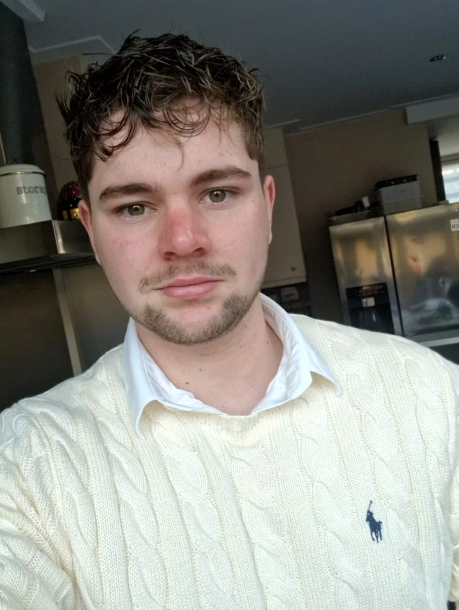

Over AvdB

AvdB is ontstaan vanuit een interesse in development en cybersecurity.
Ik vind het leuk om websites vanaf de code op te bouwen, maar ook om verder te kijken dan alleen hoe iets eruitziet. Hoe zit het technisch in elkaar? Is het snel? Is het logisch opgebouwd? En is er tijdens het ontwikkelen ook nagedacht over security?
Dat is uiteindelijk de basis geworden van AvdB.
Veel websites doen wat ze moeten doen. En daar houdt het op.
Je ziet nog steeds sites die verouderd aanvoelen, traag laden, op honderd andere lijken of technisch onnodig zwaar zijn opgebouwd. En beveiliging krijgt tijdens het bouwen zelden de aandacht die het volgens mij verdient.
Juist daar zag ik iets in. Ik wilde design, development, snelheid en beveiliging niet los van elkaar behandelen, maar als onderdelen van hetzelfde proces.
Een ander logo op hetzelfde template is geen maatwerk
De website wordt rondom het bedrijf opgebouwd. Code, layout, onderdelen en beeld maak ik specifiek voor de uitstraling en het karakter van dat ene bedrijf.
Een bouwbedrijf hoeft niet dezelfde website te krijgen als een adviesbureau, een restaurant of een technisch bedrijf. Het doel is dat een site niet alleen professioneel oogt, maar ook echt voelt alsof hij bij het bedrijf hoort.
Kwaliteit zit ook onder de motorkap
Snelheid hoort voor mij bij goed development. Een snelle website voelt prettiger voor je bezoeker, en laat tegelijk zien dat er bewust is nagedacht over hoe het ding technisch in elkaar zit.
Daarom houd ik onnodige code en afhankelijkheden zo klein mogelijk. Ik werk liever met precies wat een website nodig heeft dan met een groot systeem vol functies die nooit gebruikt worden.
Secure by design
Beveiliging is bij AvdB geen stap die pas aan het eind van een project in beeld komt. Tijdens het bouwen denk ik al na over risico's, over de technische structuur en over hoe een site op langere termijn veilig en onderhoudbaar blijft.
Mijn achtergrond in cybersecurity speelt daarin mee. Daardoor kijk ik niet alleen als developer naar een website, maar ook met een securityblik.
Geen enkele website is onaantastbaar. Maar je kunt er wel vanaf het begin bewust op bouwen. Dat geeft een betere technische basis, en meer rust zodra de site eenmaal online staat.
Alleen wanneer het iets toevoegt
AI wordt steeds vaker in websites verwerkt. Iets wordt daar niet automatisch beter van. Ik gebruik het alleen wanneer het echt iets oplevert.
Een voorbeeld is een assistent die bezoekers helpt met hun eerste vragen en ze op het juiste moment doorstuurt naar persoonlijk contact. Niet omdat een website AI moet hebben, maar omdat het de bezoeker in dat geval verder helpt.
Je hebt direct contact met degene die het bouwt
Tijdens een project kun je bellen, mailen of appen wanneer je een vraag hebt, wilt weten hoe het ervoor staat of iets wilt bespreken. Ik vind het juist belangrijk dat je bij het proces betrokken kunt zijn.
Uiteindelijk moet je niet alleen een website krijgen waar technisch veel aandacht aan is besteed, maar vooral iets waar je zelf enthousiast over bent en waarvan je voelt dat het bij jouw bedrijf hoort.
Waar AvdB voor staat.
- Kwaliteit boven kwantiteit
- Ik bouw liever minder projecten waar ik volledig achter sta dan zoveel mogelijk websites achter elkaar.
- Vakmanschap
- Aandacht voor wat je ziet én voor wat er technisch achter zit.
- Klanttevredenheid
- Je moet je gehoord voelen en weten waar je aan toe bent. Dat betekent ook dat ik het zeg wanneer iets langer duurt, of wanneer ik een oplossing niet verstandig vind.
Webdevelopment is het begin
De komende jaren wil ik AvdB verder ontwikkelen richting cybersecurity voor kleine en middelgrote bedrijven. Niet alleen websites beveiligen en testen, maar ook meedenken over systemen, netwerken en de bredere digitale beveiliging van een organisatie.
Van security testing en advies tot het ontwerpen en uitvoeren van praktische beveiligingsoplossingen. Het doel is om AvdB uit te bouwen tot een technische partner waar bedrijven terechtkunnen voor hun online omgeving én de beveiliging daarachter.
Passie voor het technische werk.
Kwaliteit in wat er wordt opgeleverd.
Twee woorden die AvdB het beste samenvatten.
Neem contact op